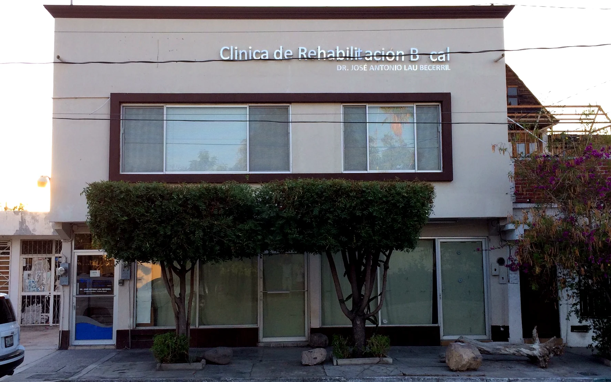
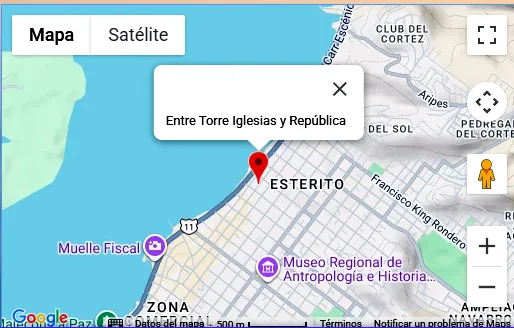

Rehabilitación bucal e implantes
Recuperamos función, estética y comodidad mediante planes personalizados.
Más de 25 años ofreciendo rehabilitación bucal, implantes, ortodoncia y atención especializada con un trato humano y personalizado.

Somos una empresa familiar dedicada al cuidado de la salud bucal desde hace más de 25 años. Nuestro compromiso es brindar diagnósticos claros, tratamientos de calidad y una experiencia cómoda para cada paciente.
Contamos con especialistas egresados de universidades reconocidas, con atención profesional en rehabilitación bucal, implantes, ortodoncia y odontología integral.
Recuperamos función, estética y comodidad mediante planes personalizados.
Alineación dental para niños, adolescentes y adultos.
Guiamos el desarrollo adecuado de los maxilares durante el crecimiento.
Resinas del color natural para restaurar dientes dañados.
Prevención, higiene profesional y una sonrisa más luminosa.
Procedimientos realizados con técnicas seguras y atención cuidadosa.
Contamos con nuestro propio laboratorio dental, lo que nos permite ofrecer trabajos personalizados con mayor precisión, excelente calidad y tiempos de entrega más rápidos.
Solicitar informaciónCirujano dentista · UNAM
Especialista en prótesis dental e implantes · UNAM
Cédulas profesionales: 4508361 · 5721373Médico estomatólogo · UAA
Especialista en ortodoncia
Cédula profesional: 4895698 · Especialidad: 718709Más de dos décadas de atención a familias.
Preparación profesional y atención responsable.
Calidad, precisión y rapidez en los trabajos.
Escuchamos tus necesidades y explicamos tus opciones.
Envíanos tus datos y se abrirá WhatsApp con tu solicitud lista para enviar.
Lunes a viernes: 8:00 a.m. a 2:00 p.m. y 4:00 p.m. a 8:00 p.m.
Sábado: 8:00 a.m. a 2:00 p.m.

Abrir ubicación en Google Maps ↗